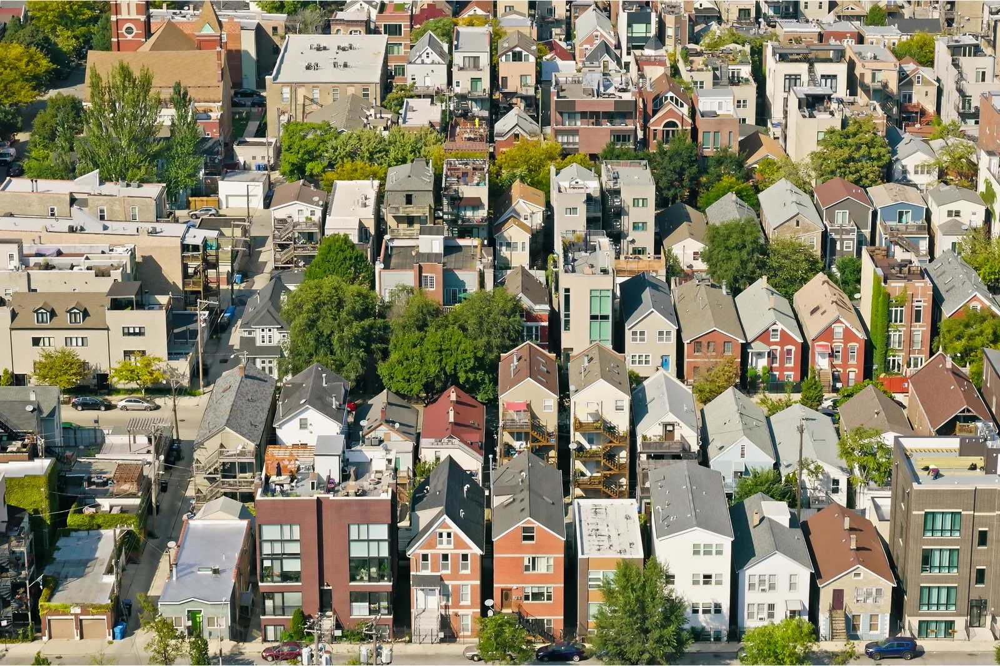

ARTICLE
Zoning Reforms Could Boost Chicago’s Housing Supply, But Other Investments Are Needed to Ensure Development Benefits All Neighborhoods
October 23, 2026

Introduction
Nationwide, rising housing costs and a housing shortage are leading policymakers to significantly reform zoning (PDF) to encourage building.
At the federal level, the 21st Century ROAD to Housing Act will give cities and counties new incentives and resources to enable more housing construction. Meanwhile, numerous state governments are developing prohousing land-use legislation, with more than 500 bills introduced in the past year that preempt restrictive local zoning.
Regardless of state actions, local policymakers in many cities, such as Chicago, are considering new approaches to spur development and boost affordability. Over the past two years, Mayor Brandon Johnson’s Cut the Tape initiative has explored ways to reform the city’s outdated zoning regulations and streamline approval and review processes. In addition, the city council has updated Chicago’s accessory dwelling unit (ADU) policy twice over the past five years. Recently, it enacted a broader citywide framework that would allow alderpersons to permit ADUs in their wards, though it gave them discretion on some issues, such as whether to require homeowners to live on-site.
In this new analysis, we use the Urban Institute’s Housing Market Forecaster to model how several zoning reforms could affect housing development in Chicago by 2041. Specifically, we examine how zoning reforms other cities have made could affect Chicago’s housing supply and distribution across neighborhoods. These reforms include:
- allowing triplexes to be built in neighborhoods currently zoned exclusively for single-family home construction,
- legalizing small apartment buildings with four to nine units across the city’s low-density neighborhoods,
- enabling denser housing developments near transit stations, or
- combining reforms 2 and 3.
We estimate that zoning reforms could enable Chicago to permit up to an additional 9,500 housing units by 2041 above baseline development projections.
In addition, we analyze whether changes to the city’s ADU rules—had they been implemented five years ago—could have increased ADU construction compared with what occurred. We find that Chicago could have tripled the number of ADUs permitted between 2021 and 2025 if the city’s rules hadn’t restricted ADU development to five pilot areas and, in some areas, owner-occupied parcels.
Taken together, these reforms could help Chicago produce more housing and spread development beyond the Loop and its surroundings, where recent development has been concentrated.
But zoning reform alone doesn’t address the market conditions and structural inequities that shape where development occurs—and could even intensify uneven development patterns. To ensure housing growth benefits all residents, the city will need to pair zoning changes with targeted public investment, conscientious private investment, and antidisplacement and community wealth-building measures.
Without zoning changes, most housing construction over the next 15 years will likely cluster in downtown Chicago and expensive neighborhoods with higher shares of white residents
Between 2011 and 2025, Chicago permitted more than 86,400 housing units, most of which were constructed. But this development wasn’t spread evenly across the city.
Using a two-stage hurdle regression model to analyze where and how this development occurred, we found that parcels were more likely to have housing permitted on them if they:
- had accommodating zoning allowances (i.e., they were located in a zoning district that allowed higher development densities);
- had a higher share of their value come from their land rather than their buildings (i.e., were underbuilt compared with what real estate market actors might consider appropriate); and
- were located in neighborhoods with lower shares of Black residents, with older average building ages, with lower existing building densities, with higher rent levels, with higher shares of residents commuting by transit, and that were closer to other higher-income neighborhoods.
In other words, zoning capacity—what the zoning code allows to be built by right on a parcel—was important but only one of several factors that affected development potential. Land value and neighborhood conditions also strongly influenced development outcomes.
The lower probability of housing permitting in areas with a higher share of Black residents reflects systemic racism’s complex influence on developers’ and residents’ perceptions related to neighborhood safety, attractiveness, and profitability rather than any intrinsic characteristic of the communities themselves. Historical practices such as redlining, segregation, discriminatory policing, extractive or predatory lending, and unequal public investment have shaped contemporary housing markets, property values, household wealth, and development financing opportunities in ways that unfortunately continue to influence redevelopment decisions.
We used Urban’s Housing Market Forecaster to estimate where housing development permits are most likely to be located over the next 15 years.
Without Reforms to the City’s Zoning Code, Permitting Requests from Now Until 2041 Will Likely Be Concentrated In and Around Chicago’s Near Northwest Neighborhoods
Estimated probability of a permit for new housing development being requested on a given parcel by 2041, based on the Urban Institute’s Housing Market Forecaster
Notes: These estimates assume the city makes no changes to its zoning code and permits continue at the same pace as they did from 2011 to 2025 under the same economic conditions. Estimates are for cumulative development from 2026 to 2041.
Sources: Authors’ analysis of Cook County Assessor parcel data, City of Chicago zoning data, and 2020–24 census tract–level American Community Survey data.
The probability that a parcel will have residential permitting by 2041 is highest in neighborhoods north and northwest of downtown. In comparison, we estimate that parcels located in neighborhoods on the far south, southwest, and western areas of the city have the lowest probabilities of residential permitting. Neighborhoods on much of the far west side would have limited housing development probabilities, as well.
However, permit probabilities are not the same as estimated housing units. A permit may be for a single-family home or a several-hundred-unit apartment tower.
If the city makes no changes to its zoning code, permits continue at the same pace as they did from 2011 to 2025, and economic conditions remain similar to today’s, we estimate that Chicago would permit another 87,500 housing units on parcels where housing can be built by right. Most of these units would be in central Chicago. Permitting probabilities for downtown parcels are low, but the average project located there is much larger, so our model estimates most new housing will be built downtown.
Under Chicago’s Current Zoning, Most Housing Units Permitted Between Now and 2041 Will Likely Be Concentrated In and Around the City’s Downtown
Estimated housing unit permits per ward by 2041, based on the Urban Institute’s Housing Market Forecaster
Notes: These estimates assume the city makes no changes to its zoning code and permits continue at the same pace as they did from 2011 to 2025 under the same economic conditions. Estimates are for cumulative development from 2026 to 2041.
Sources: Authors’ analysis of Cook County Assessor parcel data, City of Chicago zoning data, and 2020–24 census tract–level American Community Survey data.
These are modeled estimates, not guarantees of future development. Developers’ economic calculations, value assessments, and developers’ and residents’ perceptions of neighborhood conditions could change between now and 2041. Additionally, the city, private actors, or community groups could invest in infrastructure, amenities, and marketing that changes neighborhoods’ perceived value.
Still, these estimates show how permitting and development patterns could be distributed without significant policy or investment intervention.
Legalizing small-scale apartment buildings and upzoning around transit stations could add 5 to 11 percent more housing, compared with the baseline, by 2041
To understand how policymakers in Chicago could boost housing supply and affordability, we use Urban’s Housing Market Forecaster to see how zoning reforms in other cities (such as Boston, Massachusetts; Minneapolis, Minnesota; Portland, Oregon; and Seattle, Washington) could affect Chicago’s housing development.
We examine the effects of:
- allowing duplexes and triplexes on parcels that are currently exclusively zoned for single-family residential construction;
- small apartment buildings (four to nine units) on parcels that are currently exclusively zoned for single-family residential construction;
- enabling higher-density multifamily buildings within one-quarter mile of an L, Metra, or frequent Chicago Transit Authority bus station; and
- combining reforms 2 and 3.
Interactive chart redrawn for this site from the figures printed in the source.
| Zoning capacity on affected parcels | Permits on affected parcels | Permits on affected parcels (in units) | |
|---|---|---|---|
| Reform 1: Allowing duplexes and triplexes | 140% of baseline | +6.8% | +5,900 |
| Reform 2: Legalizing small apartment buildings (four to nine units) | 180% of baseline | +9.4% | +8,100 |
| Reform 3: Enabling higher-density multifamily buildings within ¼ mile of transit | 200% of baseline | +4.7% | +4,100 |
| Reform 4: Combining reforms 2 and 3 | 240% of baseline | +11.0% | +9,500 |
Source: Authors’ analysis of Cook County Assessor parcel data, City of Chicago zoning data, and 2020–24 census tract–level American Community Survey data.
Notes: Estimated effect is only for parcels where residential uses are allowed by right. The model does not include potential planned developments. For reform 1, we assume triplexes are allowed only on lots with at least 2,500 square feet; we also increase the allowed floor area ratio to 1.05. For reform 2, we allow more units on larger parcels (scaling up as the parcel size grows) and increase the allowed floor area ratio to 1.25. For reform 3, we assume that parcel areas that could be affected by this change could be as small as 1,650 square feet, and that the allowed floor area ratio is increased to 2.5. Reform 2 fully encompasses reform 1, in that it would also allow duplexes or triplexes if the lot is too small to allow bigger projects.
We estimate that allowing triplexes by right on small lots would increase the number of units permitted by 5,900. Allowing four-to-nine-unit buildings on medium and large lots would add 8,100 permitted units. Allowing high-density housing throughout areas near transit would add 4,100 units. Combined, the latter two reforms would add 9,500 units above the baseline forecast.
Given the city’s current estimated current gap of 226,000 affordable homes, these reforms would not fully address the city’s housing needs, but they represent a start. Combining transit-oriented and small-scale apartment development could help the city meet the housing needs of a wider range of residents and neighborhoods.
Finally, we mapped where each reform would add new units. We estimate that reforms 1 and 2, which are designed to incentivize additional smaller-scale apartment buildings, would likely increase housing permits in the far northwest and southwest of the city over the next 15 years. Notably, residents in these neighborhoods have on average substantially higher incomes than those in the far south side of the city.
Combining Reforms That Allow Small-Scale Apartments Plus Transit-Oriented Upzoning Would Unlock More Housing Supply Across the City
Estimated additional units permitted by 2041, compared with baseline, by reform
Reform 1: Allowing duplexes and triplexes
Reform 2: Legalizing small apartment buildings (four to nine units)
Reform 3: Enabling higher-density multifamily buildings within ¼ mile of transit
Reform 4: Combining reforms 2 and 3
Notes: These estimates assume economic conditions between 2011 and 2025 persist. Estimates are for cumulative development from 2026 to 2041.
Sources: Authors’ analysis of Cook County Assessor parcel data, City of Chicago zoning data, and 2020–24 census tract–level American Community Survey data.
We estimate that allowing denser housing in transit areas (reform 3) would have the greatest effect on Jefferson Park, Lincoln Square, and Portage Park. As expected, reform 4 would combine the relative impacts of reforms 2 and 3 on different areas.
Across all four reforms, we estimate that housing permitting in the near and far southeast would be noticeably lower than in other areas of the city: under 100 additional units per ward compared with 400 to 1,250 more in other neighborhoods.
These results suggest that without intentional intervention and investment to balance housing production, zoning reforms could perpetuate—or exacerbate—housing inequities.
Expanding the ADU pilot citywide could have led to 3.5 times as many ADU permits between 2021 and 2025
ADUs offer cities a fast and generally popular way to add housing with proven results. In 2021, Chicago launched a pilot initiative that allowed construction of detached or integrated ADUs in five different neighborhoods. In three of these areas, the city required owners to live in the primary house or unit on the lot to qualify to build an ADU. In 2026, the pilot became opt-in citywide, with alderpersons choosing what restrictions they wish to place on ADU development terms.
To help city leaders and alderpersons weigh how their decisions could affect housing production levels, we analyzed how the pilot’s original geographic and owner-occupancy restrictions affected development levels. Using a new housing forecast (logit regression) model, we explored what housing and lot characteristics were associated with ADU development.
Between 2021 and 2025, property owners permitted 343 ADUs in the pilot areas. Among these units:
- 28 percent were above-garage coach or carriage houses, built on lots with 2.8 existing units on average,
- 66 percent were internal conversions (e.g., basement, attic, or other space conversions to add units), built on lots with 4.6 existing units on average, and
- the remaining 6 percent were either external additions (built on lots with 2.2 units existing units on average), legalization of existing ADUs, or other forms that were unclear from their permit application.
ADUs permitted in the pilot areas between 2021 and 2025, by type
Chart made for this site from figures stated in the article text.
Overall, the pilot’s permitted ADUs largely represented additional units within, attached to, or outside of existing small multifamily buildings across the city.
Our model shows that across the pilot areas, ADUs were more likely to be permitted on lots in places with high demand for housing and land, and that also had higher amounts of unbuilt land on the parcel. ADUs were more common on parcels in neighborhoods with higher housing values, more multifamily housing, and no owner-occupancy requirement under the initiative. In addition, ADU construction was more likely if a parcel had a greater building value and lower land value. Notably, this is the opposite of what we found for regular housing permits between 2011 and 2025, indicating that ADU reforms are complementary to rather than substitutions for missing middle and transit-oriented housing reforms.
We then estimated how ADU permitting could have changed had the city removed the owner-occupancy rules in some of the city’s pilot areas. We found this change could have increased the number of permitted ADUs by about 30 percent, resulting in about 100 additional units between 2021 and 2025.
If the pilot had allowed ADUs to be built throughout Chicago, without any owner-occupancy rules, we estimate that the city could have permitted about 860 additional ADUs over the four years for a total of 1,203 ADUS—or 3.5 times the number of ADUs that were actually permitted.
ADUs permitted, 2021–2025: actual vs. estimated if the pilot had been citywide without owner-occupancy rules
Chart made for this site from figures stated in the article text. Values as stated in the article text: 343 ADUs permitted; “about 860 additional ADUs … for a total of 1,203 ADUS—or 3.5 times the number of ADUs that were actually permitted.”
To add more housing to low-density neighborhoods, city leaders could consider removing the owner-occupancy option from the alderpersons’ choice list. They could also consider ADU caps or quotas per ward, rather than the current opt-in structure.
Zoning reforms can help boost housing supply, but other investments are needed to ensure development is spread fairly across the city
By-right zoning changes for small-scale apartments and transit-oriented density, plus an expanded ADU policy could meaningfully increase housing permitting in Chicago.
According to our model, the city could permit about 97,000 housing units by 2041 (87,500 from baseline development estimates plus 9,500 from the combined zoning reforms) and potentially add thousands more units by liberalizing the city’s new ADU policy.
But intentional investment is needed to spread development across the city without displacing residents. Our analysis highlights that zoning reforms alone risk concentrating development in already-advantaged neighborhoods and exacerbating the city’s already polarized investment landscape.
To boost housing development across the city, the city council should combine regulatory liberalization with targeted public investment and antidisplacement measures. To spur housing and economic development in neighborhoods that aren’t expected to have much development in the coming years, city leaders could invest in predevelopment work to clean and green vacant lots, offer property tax adjustments,expand homeownership and wealth-building programs, strengthen community land trusts, or strengthen local investment programs to build wealth among current residents.
ABOUT THE DATA
This analysis combines parcel-level data from the Cook County Assessor, the City of Chicago, and our research partners at the Chicago Metropolitan Planning Council—including panel zoning data, building permits, building footprints, and transit access—with census tract characteristics from the American Community Survey.
To analyze housing development from 2011 to 2025, we examine parcels where residential development was allowed by right. We estimate each parcel’s zoned housing capacity and use a two-stage Poisson hurdle regression model. For parcels that underwent planned development reforms (i.e., a custom site plan that bypasses zoning requirements through negotiations with the city) in this timeframe, we assume that by-right development is equivalent to each planned development’s final underlying zoning district (as available). Between 2006 and 2024, more than 60 percent of all multifamily development was in planned developments. Our approach is limited because we do not have data on all planned development projects and thus exclude about half of these projects from our analysis. This also means a large share of the by-right permits we evaluate are on parcels that underwent planned development changes in the past.
Using this data, we estimate the likelihood that a parcel received a housing permit based on its zoning, land value, and neighborhood characteristics. Then, we estimate the number of units permitted on parcels where development occurred. We applied these relationships to 2026 parcel and neighborhood conditions to construct a 2041 baseline and then model how permitting could change under four zoning reforms that would allow triplexes, four-to-nine-unit buildings, and higher-density housing near frequent transit. We assume that the baseline level of development in the next 15 years is the same as that over the past 15 years.
For the ADU analysis, we link ADU permits issued from 2021 to 2025 to parcel and neighborhood characteristics and estimate a logistic regression for eligible parcels in Chicago’s pilot areas. We then sum parcel-level predicted probabilities and the geographic variation across pilot areas that did and didn’t require owner occupancy to estimate how many ADUs might have been permitted without the owner-occupancy requirements. Finally, we apply the model to eligible low-density residential parcels outside the pilot areas to simulate a citywide program.
These scenarios illustrate how permitting might differ under alternative policies. They remain sensitive to future market and demographic conditions.
Funders and disclaimer
This research, done in partnership with the Chicago's Metropolitan Planning Council, was made possible by the generous support of Chicago Community Trust, Robert Wood Johnson Foundation, John D. and Catherine T. MacArthur Foundation, Robert R. McCormick Foundation, Walder Foundation, U.S. Bank, Regional Plan Association, PNC Foundation, Peoples Gas Community Fund at the Chicago Community Foundation, Bowman C. Lingle Trust, and the Conant Family Foundation.
We are grateful to all our partners and funders, who make it possible for Urban to advance its mission. The views expressed are those of the authors and should not be attributed to the Urban Institute, Metropolitan Planning Council, or either organization’s trustees, project advisors, or funders. Funders do not determine research findings or the insights and recommendations of Urban experts. Further information on the Urban Institute’s funding principles is available at http://urban.org/fundingprinciples.